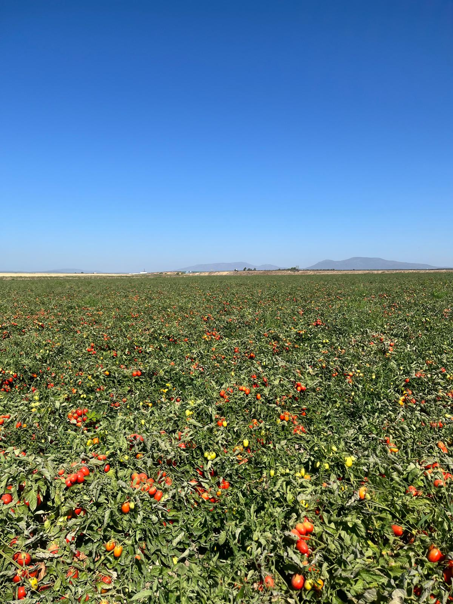
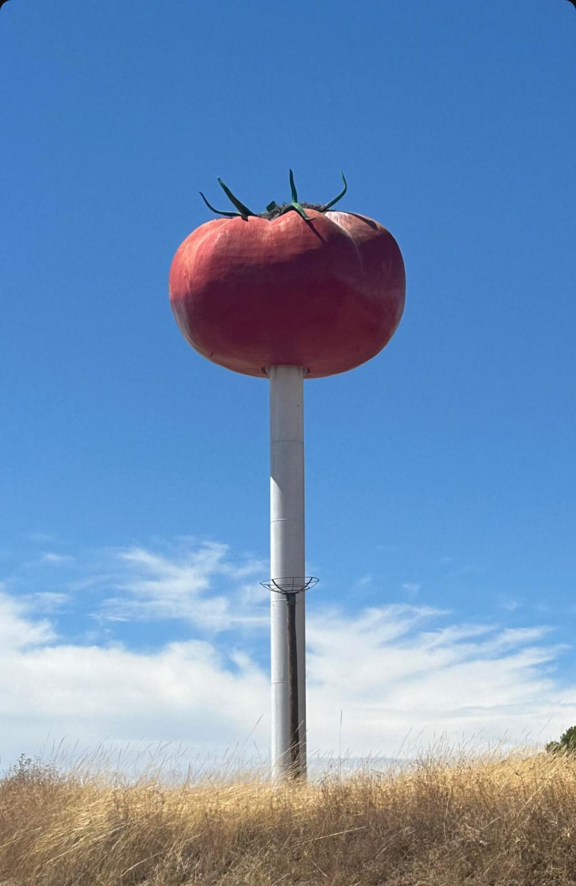

Extremadura es la mayor productora de tomates en España, con un cultivo intensivo en las Vegas del Guadiana, zona a la cual pertence mi pueblo.
Como he comentado antes, mi pueblo es la Capital Europea del Tomate y cuenta con múltiples fábricas dedicadas a ello por lo que es la principal fuente de empleo durante los meses de verano
Entre ellas destacan Nestle, Gallina Blanca, Conexa, Transa, etc
Foto de la producción del año pasado
De tal importancia es el cultivo que tienemos una enorme escultura de un tomate en el pueblo
Este es un vídeo mío cosechando este verano
Como curiosidad, los últimos años tenemos que cosechar los tomates durante las 24 horas de día en pleno verano. Sin duda un trabajo muy duro.
Para mí, es mi cultivo preferido, aunque también el que más trabajo necesita y más tiempo hay que dedicarle ya que son muy sensibles y hay que tener mucho cuidado con todos los abonos, fertilziantes y horas de riego. Es un cultivo que tienes que ver y pasear a diario
Por otro lado, es el cultivo del que más productividad hemos sacado y el más rentable ultimamente
Lastima que como casi todo en este sector, cada vez que algo va bien empiezan a bajar los precios y llevandose otros el beneficio
Para que se hagan una idea, la tonelada de tomates (1000kg) nos la pagan a 110 euros, para que vean la diferencia con lo que luego puede costar en el supermercado...
Si deseas más información sobre el cultivo del tomate en Extremadura, rellena el siguiente formulario.